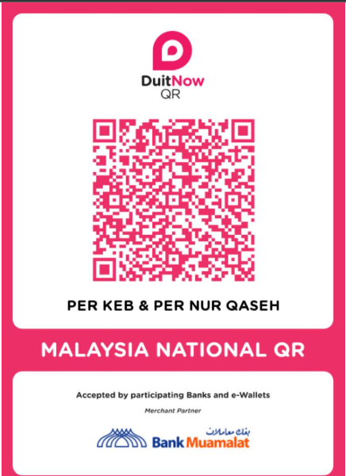
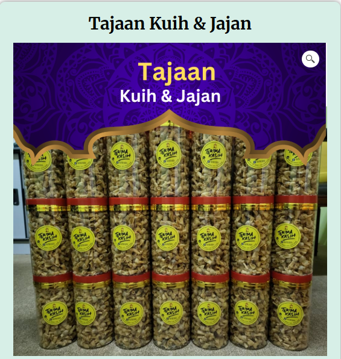
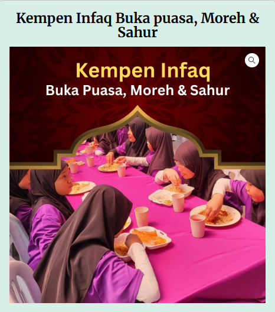
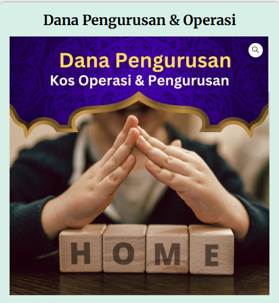
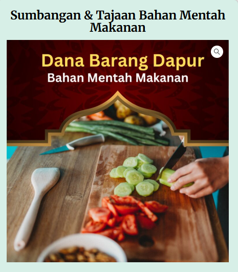
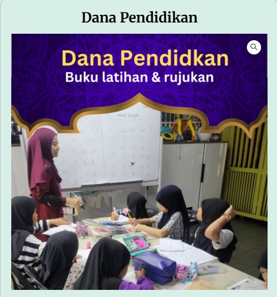
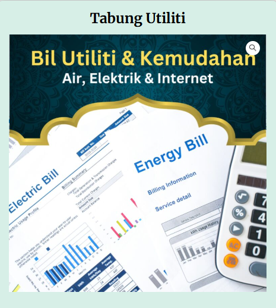
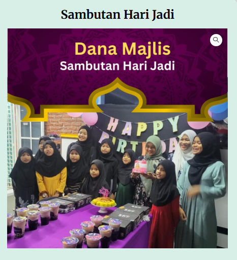

.png)
Donation & Contribution
Your donation helps us provide shelter, education, food, healthcare, and emotional support for orphans and underprivileged children at Rumah Perlindungan Nur Qaseh.
Why Donate to Nur Qaseh?
- Provide daily meals and basic necessities
- Support education and school expenses
- Ensure a safe and loving home environment
- Help with utilities, maintenance, and healthcare
How to Donate
Step 1: Choose Your Intention
Decide your donation purpose such as general donation, education fund, food sponsorship, or utilities support.
Step 2: Make Your Donation
Click the button below to proceed to our official donation platform. You can donate using online banking or QR payment.
{kind=link}
Note: Payments may appear as ANSI SISTEM SDN BHD (ToyyibPay payment gateway) in your bank statement.
Choose a Donation Campaign
Select a campaign below to contribute directly to a specific need at Rumah Perlindungan Nur Qaseh.
|

Tajaan Kuih & Jajan JOM INFAQ |

Kempen Infaq |

Dana Pengurusan & Operasi JOM INFAQ |
|

Dana Barang Dapur |

Dana Pendidikan JOM INFAQ |

Kelas Mengaji |
|

Tabung Utiliti JOM INFAQ |

Sambutan Hari Jadi JOM INFAQ |
{kind=link}
{kind=link}
{kind=link}
{kind=link}
{kind=link}
{kind=link}
{kind=link}
Step 3: Receive the Rewards
Your contribution brings hope to children in need. May Allah reward your kindness with continuous blessings.
Thank You
Every donation, no matter the amount, makes a meaningful difference. Jazakumullahu khairan for your generosity and support.